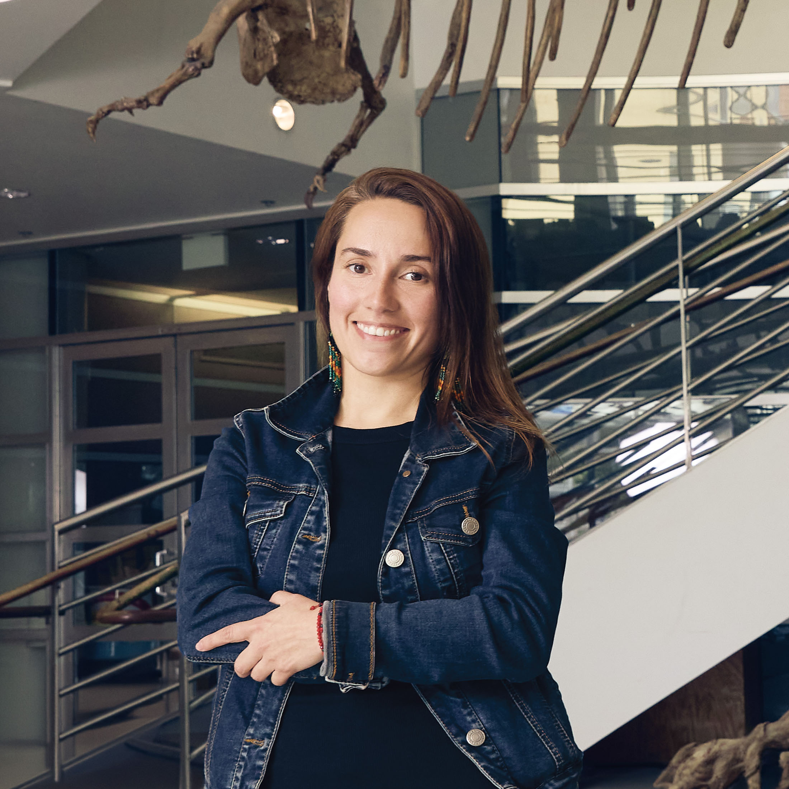

I am an evolutionary developmental biologist studying how genes orchestrate divergent craniofacial and sensory morphologies. For that purpose, I use Cyprinodon pupfishes from San Salvador Island, Bahamas, one of the fastest-evolving vertebrate radiations, as a novel model system for biomedical research. Pupfishes exhibit strikingly different craniofacial morphologies despite minimal genetic differentiation, providing a powerful system to dissect the mechanisms of rapid phenotypic change. My interdisciplinary approach bridges craniofacial development, gene regulation, evolution, morphology, neuroscience, and functional genomics.
I am based at the Museum of Vertebrate Zoology and the Department of Integrative Biology of the University of California, Berkeley. My research is funded by a K99/R00 Pathway To Independence Award from the National Institute of Dental and Craniofacial Research.
We use in situ hybridization chain reaction to investigate differential expression of novel craniofacial genes during development in generalist and specialist pupfishes, revealing their contributions to phenotypic divergence. Our work on the regulatory region of galr2 in San Salvador Island pupfishes links sequence variation to spatial expression differences. Additional peptide inhibition experiments uncovered its novel role in jaw elongation
By integrating tissue-specific transcriptomics and speciation genomics, I identified fourteen novel candidate craniofacial genes in specialists that are exclusively expressed in craniofacial tissues at hatching —the earliest stage of morphological divergence— and carry differentiated regulatory mutations between species. We validated differential expression in the pharyngeal arches and craniofacial muscles of scale-eaters versus generalists for two novel genes, pycr3 and atp8a1. Read about our work publish in Genetics here.
We are actively generating targeted mutants using CRISPR/Cas9 to dissect the functional roles of candidate genes, and creating Tol2 reporter lines to visualize their spatial and temporal expression in vivo. These resources will enable us direct testing of gene function and real-time tracking of developmental processes at cellular, tissue, and organismal level resolution.
My research program aims to understand cell type-specific chromatin states across San Salvador Island and outgroup pupfishes using chromating profiling techniques such as ATAC- and MOA-seq in combination with transcriptomics to reveal genome-wide changes in chromatin accessibility and transcription factor occupancy linked to gene expression. This work will shed light onto how regulatory variation drives divergent craniofacial developmental pathways and regulatory networks.